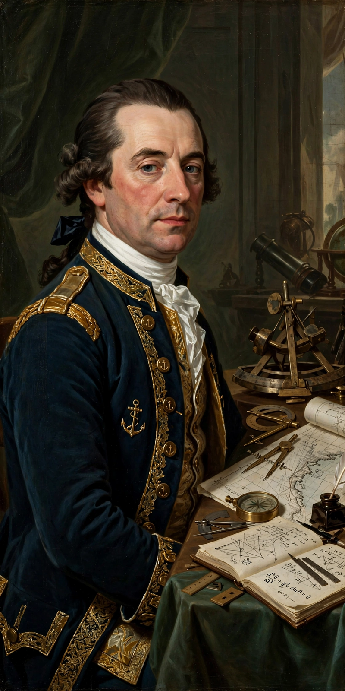

From Wikipedia, the free encyclopedia
| Born | 4 May 1733, Dax, France |
|---|---|
| Died | 19 February 1799 (aged 65), Paris, France |
| Occupation | Mathematician, physicist, naval officer |
| Known for | Borda count; work on fluid mechanics and the metric system |
Jean-Charles, chevalier de Borda (4 May 1733 – 19 February 1799) was a French mathematician, physicist and naval officer. He made important contributions to fluid mechanics, navigation and metrology, served as a naval officer including during the American Revolutionary War, and helped lay the foundations of the metric system. His name is one of the 72 names inscribed on the Eiffel Tower.
In a memoir presented to the Academy of Sciences in 1770 and published in 1781, Borda proposed an election method — the Borda count — in which voters rank candidates and each candidate receives points according to their position on each ballot (last place 0 points, next 1, and so on, or equivalently first place receives points equal to the number of candidates ranked below). The candidate with the most points wins. The Borda count is the archetypal positional voting system.
Borda designed the method to reflect the electorate's overall judgement and famously answered critics who noted voters could manipulate it: "My scheme is intended only for honest men." His proposal sparked a long controversy with the Marquis de Condorcet, who showed the Borda count can defeat the candidate who would beat every other head-to-head, and that majority preferences can cycle. The Borda–Condorcet debate remains foundational in social choice theory, informing modern discussion of strategic voting and score voting.

Borda improved navigational instruments (including the repeating circle used in meridian surveys), experimented on the resistance of fluids and projectiles, commanded ships in the Caribbean campaigns of the American war, and was captured by the British in 1782 and briefly held. As a member of the commission on weights and measures, he contributed to the surveys underpinning the metre.
Categories: 1733 births · 1799 deaths · French mathematicians · Voting theory